PRIVATE AI HARNESS
A private assistant that runs in your own AWS account.
Prepared for Greg Barrow, Sandy Harrison and Jack Savage by Aaron Whittaker, ProCloser.ai (aaron@procloser.ai).
![ProCloser.ai]()
What you get
A versioned record for every deal
A private assistant that runs in your own AWS account. It keeps a versioned record for every deal and works from the files and mail you already have.
- A record store, Postgres plus a Markdown file per deal, versioned, with a nightly backup.
- Read-only ingestion of the deal folder, emailed attachments and your calendar.
- A Monday "stuck and owed" digest.
- A pre-meeting brief 24 hours before any outside meeting, with open items and who owes what. All items are listed and the open ones are flagged.
- OCR of attachments and handwriting.
- Voice-matched email drafts that show up in your drafts folder.
- Call-back reminders.
- A dashboard page.
- DeepSeek on Bedrock for bulk, non-confidential work. Claude for the rest.
Confidential lane
NDA work stays in your AWS account
- Bedrock in your AWS account, on a private address over Tailscale, with SSO, an audit log and spend caps.
- A Plaud "confidential" keyword files NDA transcripts only to this lane.
- Person-level visibility. You choose who sees confidential items, for example only Greg and Sandy.
Your Affinity data and pipelines, included
The data stays yours and keeping Affinity is your call
We rebuild your lists, pipelines, notes and history inside your own system, so keeping or cancelling Affinity at renewal is your call. All 33 of your Affinity lists come into the new store, including your five pipelines: GCP Pipeline, Sell Side & BK, ShoreBreaK, Advisory and All Active Deals. ShoreBreaK keeps its own pipeline, the way you set it up.
- A full export before renewal: organizations, people, lists, notes and interactions, loaded into your store.
- Your notes, open reminders and LinkedIn profile links come across with the people, companies and deals they belong to.
- Each of you can add your own LinkedIn connections file, the same way Affinity takes it in.
- The system does not collect from LinkedIn automatically, because LinkedIn's terms do not allow it.
- The system logs who you emailed and met, and when, so last-contact dates and follow-up reminders keep working.
- Add and edit deals through Claude, with dedupe.
- Pipeline views on the dashboard.
- The BankruptcyData loader adds new deals to the GCP Pipeline list.
- Cutover, then a keep-or-cancel memo before the renewal.
What we are not rebuilding: Affinity's relationship strength scores, its company data feeds from PitchBook, Dealroom and Crunchbase, its Chrome extension, its notetaker and its mobile app. If you want any of these, we quote it as a separate project.
Training and self-service
Your team configures it with AI, and we keep it running
Two training sessions, a runbook, and a git setup so your team can configure the digests, briefs, views and reports themselves with AI, following the runbook. We stay on for maintenance and support as set out below. Everything runs in your accounts and you own it.
Who does what
We build it and keep it running. You configure it.
We build the system and keep it running. Your team teaches it how you work and runs it day to day, and we show you how.
ProCloser builds, weeks 1 to 6
- Files the Claude access request in your AWS account on day one.
- Builds the record store, the ingestion, the digest, the briefs, the drafts, the reminders and the dashboard.
- Builds the confidential lane inside your AWS account.
- Exports your Affinity lists into your store and runs the cutover.
- Runs two training sessions and hands over the runbook.
General Capital Partners
- Greg and Sandy pick an option and sign.
- Jack confirms the Affinity renewal date, gives us access to your AWS account and creates a separate Affinity key for the system.
- You pay the AWS bill directly, and you pay Anthropic for the Claude Team seats.
- You tell us who can see confidential items and which mail system the drafts go to.
- After go-live your team teaches the assistant how you work and configures the digests, briefs, views and reports by asking the AI. We show you how in training.
Monthly fee
What the monthly fee covers
Included
- Monitoring, backups, security updates and model updates when Anthropic or AWS change something.
- Any fix to something we built, at no charge and without a quote.
- Up to 1 hour a month of adjustments and small additions. Unused time does not carry over.
- A 30-minute check-in call each month.
- Replies within one business day, Monday to Friday.
- A 30-day review after go-live: what the team uses, what it saves.
Not included
- New features, new data sources or new integrations. We quote these per project before any work starts.
- Day-to-day configuration and teaching the assistant how you work. Your team does this by asking the AI, and we train you on it.
- Support for changes made outside the runbook. We can fix those as quoted work.
- Also discussed in Dallas and quoted separately when you want them: a PitchBook review, a Slack feed, research agents and version notices on shared documents.
One owner on your side
- Jack is the named owner of the system. Requests come through him, and he gets the admin training and the runbook.
Models and security
Claude for judgment, DeepSeek for bulk
Models
Claude Sonnet 5.5 and Opus 5.5 on Bedrock, with DeepSeek for bulk work. Claude on Bedrock is enabled per AWS account. We file the request on day one, and the lead time is AWS's.
Security
- A written data-flow diagram.
- The confidential lane runs inside your AWS account.
- Your counsel reviews the terms.
Timeline
Six weeks from signing and AWS and Bedrock access
Weeks 1 to 3
The assistant, the record store and the Affinity mirror.
Weeks 3 to 5
The confidential lane.
Weeks 5 to 6
The cutover from Affinity, with a final export first, and training.
If your Affinity renewal comes up before week 6, we run the export first.
Pricing
Two ways to start
The one-time setup fee is $2,500 on both options.
| Plan | Setup | Monthly | Notes |
|---|---|---|---|
| Option 1 | $2,500 setup at signing | $995/mo | Setup paid up front |
| Option 2 | No separate setup payment | $1,412/mo months 1 to 6 (includes the setup), then $995/mo | Setup spread over 6 months |
| AI Search Visibility add‑on | +$995/mo | Optional |
The AI Search Visibility add-on is monthly work so ChatGPT, Google AI and Perplexity name GCP when business owners ask for an M&A advisor.
Terms, costs, support
What we ask in return, and what runs in your accounts
Terms
- Both options run for a 6-month term. At signing you pay $3,495 on Option 1, which is the $2,500 setup plus the first $995 month, or $1,412 on Option 2, which is the first month.
- If you stop before month 6, the remaining months of the term are due at your option's monthly rate.
- After month 6 the agreement runs month to month at $995/mo, and either side can end it with 30 days written notice. You pay through the notice period and nothing after it. Whenever the agreement ends, you keep the system and everything we built, and our maintenance and support end.
- In return for this price we ask for 3 qualified introductions in the first 12 months and a case study, which you approve before it is published.
- A qualified introduction is a firm you refer to us that takes a discovery call with ProCloser.
- Our liability is capped at the fees paid in the 12 months before the claim.
Costs in your accounts
Hard costs run in your own accounts: about $110-170/mo at base use (Lightsail, the Bedrock gateway and Bedrock tokens). Of that, the server is about $24 and the gateway is $16 to $30. Model usage is the rest, about $75 to $105 a month. Heavy use can raise it. Claude Team seats are billed by Anthropic per user, and the seat count is your choice.
Support and payment
- Replies within one business day, Monday to Friday. An on-call option is $500/mo.
- Payment by Stripe, card or ACH.
Next steps
Four steps to kickoff
- Jack confirms the Affinity renewal date.
- Greg and Sandy pick option 1 or 2 and sign.
- Jack gives us access to your AWS account.
- We hold the kickoff call and the six weeks start.